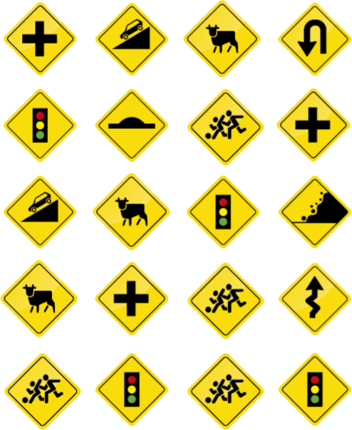

Reconocer las principales señales de tránsito preventivas de las calles y carreteras.
Cuenta las señales preventivas iguales y coloca el número en la parte correspondiente.

Curva y contra curva abierta:
Curva cerrada izquierda:
Curva tipo U izquierda:
Cruce de vías:
Intersecciones en T:
Aproximación a semáforo:
Cruce peatonal con prioridad:
Resalto reductor de velocidad:
Descenso pronunciado:
Zona de derrumbes derecha:
Animales en la vía:
Zona de juegos: